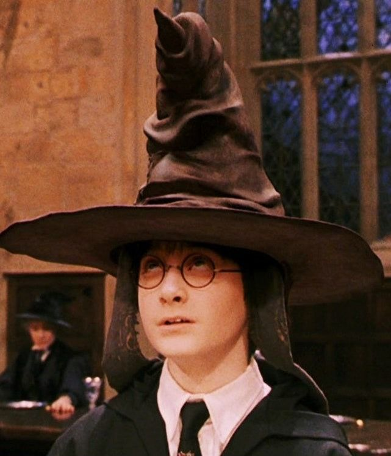

Sombrero Seleccionador
Utilizado para asignar a los estudiantes de primer año de Hogwarts a una de las cuatro casas
Estos objetos magicos aparecen a lo largo de las peliculas, tienen su uso y función.
Utilizado para asignar a los estudiantes de primer año de Hogwarts a una de las cuatro casas

Es un pequeño reloj de arena dorado que, al girarlo, permite a quien lo usa viajar en el tiempo.

Es una pequeña y rápida pelota dorada con alas que se utiliza en el deporte mágico de Quidditch

Son tres poderosos y mágicos objetos que, según la leyenda, fueron creados por la Muerte misma y otorgados a tres hermanos. La varita de Saúco, La piedra de la Resurrección y La capa de Invisibilidad

Se trata de una piedra roja y brillante que tiene el poder de convertir cualquier metal en oro y, lo más importante, puede crear el Elixir de la Vida, que otorga inmortalidad a quien lo beba.